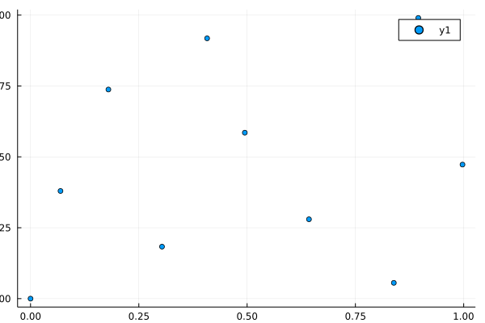

Thresholded Monte-Carlo Iterator
Implementation of a global design to generate samples within a hyper-rectangle in $ℝ^n$. It was devised by Crombecq and is called mc-intersite-proj-th in the dissertation.
Samples are generated iteratively to maximize both the intersite distance and the projected distance. First, a bunch of samples are generated randomly their scores are calculated. The projected distance must be greater than a certain threshold. The best sample is selected to be included in the design.
We provide the iterator MonteCarloThDesign.
PointSampler.MonteCarloThDesign — TypeMonteCarloThDesign(; dims :: Int ) <: PointIteratorReturn an iterator that provides samples within a hyper- rectangle in $ℝ^n$ where $n$ is the dimension provided to the iterator as dims.
Optional keyword arguments are:
n_points=100*dimsThe maximum number of points to generate.lb=zeros(dims)Lower bounds of hyper-rectangle. Must all be finite.ub=ones(dims)Upper bounds of hyper-rectangle. Must all be finite.seeds = []. An initial set of points to add samples to. Is copied and internally modified.clean_seeds=trueThrow away seeds that violate the box constraints.spawn_factor = 100In each iterationdims*spawn_factorrandom points are generated.max_rand_pointsUpper bound on the number of random points.p_dist_th_factor = 0.5The samples must have a projected distance exceeding2*p_dist_th_factor/N.
Quick Usage Example
This samples 10 points from within $[0,1]×[0,1]$.
using PointSampler
it = MonteCarloThDesign(; dims = 2, n_points = 10, spawn_factor = 200 );
points = collect(it);The points should have distinguishable positions:
using Plots
scatter(Tuple.(points))/home/runner/.julia/packages/GR/9Vi4m/src/../deps/gr/bin/gksqt: error while loading shared libraries: libQt5Widgets.so.5: cannot open shared object file: No such file or directory connect: Connection refused GKS: can't connect to GKS socket application GKS: Open failed in routine OPEN_WS GKS: GKS not in proper state. GKS must be either in the state WSOP or WSAC in routine ACTIVATE_WS

Legacy Function
There is a legacy function to accomplish the same:
PointSampler.monte_carlo_th — Functionmonte_carlo_th( n_points = 10, n_dims = 2; seeds = [], spawn_factor = 50, pdist_threshold_tolerance = 0.5 )Return an array of length n_points containing real vectors representing points in space with n_dims dimensions. The points are iteratively chosen from random point sets to maximize a space-filling criterion as described in
"Surrogate Modelling of Computer Experiments with Sequential Experimental Design.", Crombecq, 2011
The returned point set is constructed starting with the points in seeds. If seeds is empty (default), then the singleton set containing the zero vector is used.
Scale the design returned by the unconstrained version of this function to the box defined by lb and ub.